Poglavlje - 3 Prostorne analize u R-u
3.2 Radni projekt
Dio predviđen za opis radnog zadatka.
3.2.1 Uvoz podataka
Prvo se učitavaju potrebne programske biblioteke koje omogućuju rad s prostornim podacima, vizualizaciju i analizu, te manipulaciju podacima. Zatim se postavlja radni direktorij u kojem se nalaze svi podaci za analizu. Kod pretražuje sve datoteke u tom direktoriju koje imaju format prostorne datoteke (.shp). Svaka pronađena datoteka automatski se učitava i pretvara u R objekt s odgovarajućim imenom, što omogućuje njihovu daljnju analizu. Na kraju, daje se pregled osnovnih informacija o jednom od tih objekata kako bi se dobila bolja slika o sadržaju podataka.
# Učitavanje svih potrebnih biblioteka za ovaj projekt
library(sf) # Biblioteka za rad s prostornim podacima (shapefiles, geometrija)## Warning: package 'sf' was built under R version 4.3.3## Linking to GEOS 3.11.2, GDAL 3.8.2, PROJ 9.3.1; sf_use_s2() is TRUE## Warning: package 'ggplot2' was built under R version 4.3.3## Warning: package 'dplyr' was built under R version 4.3.3##
## Attaching package: 'dplyr'## The following objects are masked from 'package:stats':
##
## filter, lag## The following objects are masked from 'package:base':
##
## intersect, setdiff, setequal, union## Warning: package 'readxl' was built under R version 4.3.2## Warning: package 'corrplot' was built under R version 4.3.3## corrplot 0.95 loaded## Warning: package 'spdep' was built under R version 4.3.3## Loading required package: spData## Warning: package 'spData' was built under R version 4.3.3## To access larger datasets in this package, install the spDataLarge
## package with: `install.packages('spDataLarge',
## repos='https://nowosad.github.io/drat/', type='source')`# Postavljanje radnog direktorija
setwd("C:/Users/dbecic/OneDrive - Grad Zagreb/Desktop/R Projects/RAnaliza/Data")
# Dohvaćanje popisa svih .shp datoteka u radnom direktoriju
shp_files <- list.files(pattern = "\\.shp$") # Pretražuje datoteke koje završavaju na .shp
# Iteracija kroz sve pronađene shapefile datoteke
for (file in shp_files) {
object_name <- tools::file_path_sans_ext(file) # Uklanja ekstenziju
assign(object_name, st_read(file)) # Dinamičko učitavanje shapefile-a
}## Reading layer `Bus' from data source
## `C:\Users\dbecic\OneDrive - Grad Zagreb\Desktop\R Projects\RAnaliza\Data\Bus.shp'
## using driver `ESRI Shapefile'
## Simple feature collection with 1875 features and 1 field
## Geometry type: POINT
## Dimension: XY
## Bounding box: xmin: 444204.4 ymin: 5053858 xmax: 478993.9 ymax: 5088970
## Projected CRS: HTRS96 / Croatia TM
## Reading layer `Katastar' from data source
## `C:\Users\dbecic\OneDrive - Grad Zagreb\Desktop\R Projects\RAnaliza\Data\Katastar.shp'
## using driver `ESRI Shapefile'
## Simple feature collection with 33 features and 5 fields
## Geometry type: POLYGON
## Dimension: XY
## Bounding box: xmin: 447310.4 ymin: 5058613 xmax: 479770.8 ymax: 5088960
## Projected CRS: HTRS96 / Croatia TM
## Reading layer `Ljekarna' from data source
## `C:\Users\dbecic\OneDrive - Grad Zagreb\Desktop\R Projects\RAnaliza\Data\Ljekarna.shp'
## using driver `ESRI Shapefile'
## Simple feature collection with 245 features and 3 fields
## Geometry type: POINT
## Dimension: XY
## Bounding box: xmin: 448365.7 ymin: 5058255 xmax: 475382.1 ymax: 5085627
## Projected CRS: HTRS96 / Croatia TM
## Reading layer `Skola' from data source
## `C:\Users\dbecic\OneDrive - Grad Zagreb\Desktop\R Projects\RAnaliza\Data\Skola.shp'
## using driver `ESRI Shapefile'
## Simple feature collection with 177 features and 5 fields
## Geometry type: POINT
## Dimension: XY
## Bounding box: xmin: 446863.2 ymin: 5058245 xmax: 475496 ymax: 5088670
## Projected CRS: HTRS96 / Croatia TM
## Reading layer `Tramvaj' from data source
## `C:\Users\dbecic\OneDrive - Grad Zagreb\Desktop\R Projects\RAnaliza\Data\Tramvaj.shp'
## using driver `ESRI Shapefile'
## Simple feature collection with 260 features and 2 fields
## Geometry type: POINT
## Dimension: XY
## Bounding box: xmin: 452779.2 ymin: 5070942 xmax: 467198.9 ymax: 5080219
## Projected CRS: HTRS96 / Croatia TM
## Reading layer `Vrtic' from data source
## `C:\Users\dbecic\OneDrive - Grad Zagreb\Desktop\R Projects\RAnaliza\Data\Vrtic.shp'
## using driver `ESRI Shapefile'
## Simple feature collection with 329 features and 6 fields
## Geometry type: POINT
## Dimension: XY
## Bounding box: xmin: 448757.4 ymin: 5058059 xmax: 475318.9 ymax: 5085856
## Projected CRS: HTRS96 / Croatia TM# Prikaz podataka
summary(Katastar) # Prikazuje osnovne informacije o shapefile objektu (zamijenite 'Katastar')## OBJECTID KO_NAZIV SHAPE_Leng SHAPE_Area
## Min. : 1.00 Length:33 Min. : 7540 Min. : 2730871
## 1st Qu.:13.00 Class :character 1st Qu.:14963 1st Qu.: 7133608
## Median :29.00 Mode :character Median :18051 Median : 8660181
## Mean :28.42 Mean :20283 Mean :12265300
## 3rd Qu.:43.00 3rd Qu.:25139 3rd Qu.:14825456
## Max. :56.00 Max. :39142 Max. :37871238
## KEY geometry
## Min. : 1 POLYGON :33
## 1st Qu.: 9 epsg:3765 : 0
## Median :17 +proj=tmer...: 0
## Mean :17
## 3rd Qu.:25
## Max. :33# Vizualizacija prostornih podataka
# plot() prikazuje geometriju prostornih slojeva koristeći osnovne alate u R-u
# "geometry" je Kljuc stupca u sf objektu koji sadrži informacije o geometriji
plot(Katastar["geometry"], main = "KO_Kljuc") # Dodaje naslov grafu koristeći main = "Naslov"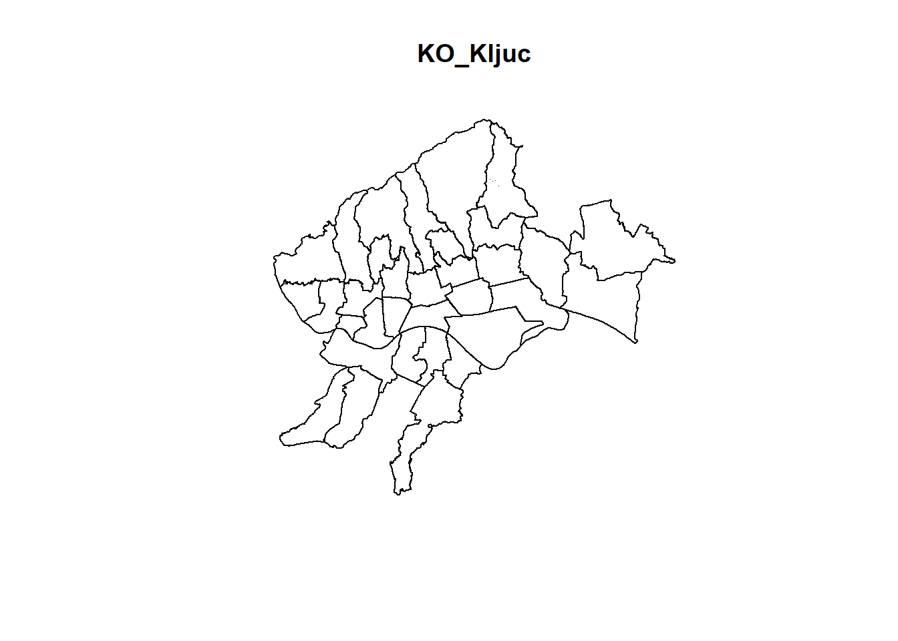
# 4. Učitavanje statističkih podataka iz Excel datoteke
# Definira Kljuc Excel datoteke koja sadrži dodatne informacije o nekretninama
excel_data <- "Nekretnine_Izvjesce.xlsx"
# Koristi funkciju read_excel() za učitavanje podataka iz Excel datoteke u tablični format
Nektretnine <- read_excel(excel_data)3.2.2 Analize 1
# 5. Spajanje prostornih podataka s tabličnim podacima
# Funkcija left_join() spaja dva podatkovna okvira na temelju zajedničkog atributa
# "KEY" je zajednički ključ koji povezuje podatke iz Excel datoteke i shapefile-a
Katastar <- Katastar %>%
left_join(Nektretnine, by = "KEY")
# 6. Računanje broja objekata u katastarskim općinama
# Dodaje nove stupce u podatke koji broje objekte unutar svake katastarske općine
Katastar <- Katastar %>%
mutate(
# Koristi funkciju st_intersects() za identifikaciju presjeka geometrija
# lengths() računa broj objekata koji se nalaze unutar svake općine
Count_Bus = lengths(st_intersects(Katastar, Bus)), # Broji autobuse
Count_Ljekarna = lengths(st_intersects(Katastar, Ljekarna)), # Broji ljekarne
Count_Skola = lengths(st_intersects(Katastar, Skola)), # Broji škole
Count_Tramvaj = lengths(st_intersects(Katastar, Tramvaj)), # Broji tramvaje
Count_Vrtic = lengths(st_intersects(Katastar, Vrtic)) # Broji vrtiće
)
# 7. Osnovna vizualizacija broja autobusa po katastarskim jedinicama
# Koristi ggplot2 za vizualizaciju prostornih podataka
ggplot(Katastar) +
geom_sf(aes(fill = Count_Bus)) + # Boji prostorne jedinice prema broju autobusa
theme_minimal() + # Primjenjuje minimalistički stil grafa
labs(title = "Broj Autobusa po Katastarskoj jedinici", fill = "Autobusi") # Dodaje naslov i legendu
# 8. Vizualizacija s prilagođenim gradijentom boja
# Dodaje gradijent boja od crvene (malo autobusa) do tamnoplave (mnogo autobusa)
ggplot(Katastar) +
geom_sf(aes(fill = Count_Bus)) +
scale_fill_gradient(low = "red", high = "darkblue") +
theme_minimal() +
labs(
title = "Broj Autobusa po Katastarskoj jedinici",
fill = "Autobusi"
)
# Linearni model je jednostavna metoda koja koristi jednu varijablu, poput vremena, za predviđanje trenda
# Linearni model za projekciju cijena
# Cilj: Predviđanje buduće cijene na temelju prošlih cijena.
# Ulazne varijable: Samo godine (2021, 2022, 2023).
# Rezultat: Model daje cijenu za 2024. na temelju povijesnog trenda.
# Ograničenje: Gleda samo prošle godine i ignorira druge faktore (npr. škole, tramvaje, vrtiće).
# 9. Projekcija cijena za 2024. godinu
# Dodaje novi stupac koji predviđa cijene nekretnina za 2024. godinu koristeći linearni model
Katastar <- Katastar %>%
rowwise() %>% # Omogućuje da se operacije izvode red po red
mutate(
MEDIJALNA_CIJENA_EUR_24 = {
# Definira ulazne podatke za regresijski model (godine i cijene)
years <- c(2021, 2022, 2023)
prices <- c(MEDIJALNA_CIJENA_EUR_21, MEDIJALNA_CIJENA_EUR_22, MEDIJALNA_CIJENA_EUR_23)
# Kreira linearni model koji predviđa cijenu na temelju godina
fit <- lm(prices ~ years)
# Predviđa cijenu za 2024. godinu
predict(fit, newdata = data.frame(years = 2024))
}
) %>%
ungroup() # Uklanja redno grupiranje3.2.3 Analize 2
# 10. Deskriptivna statistika prosječnih cijena
# Izračunava prosječne cijene nekretnina po godinama (2021-2024)
prosjek_cijena_df <- Katastar %>%
summarise(
Prosjek_2021 = mean(MEDIJALNA_CIJENA_EUR_21, na.rm = TRUE),
Prosjek_2022 = mean(MEDIJALNA_CIJENA_EUR_22, na.rm = TRUE),
Prosjek_2023 = mean(MEDIJALNA_CIJENA_EUR_23, na.rm = TRUE),
Prosjek_2024 = mean(MEDIJALNA_CIJENA_EUR_24, na.rm = TRUE)
)
# Vizualizacija prosječnih cijena kroz godine koristeći stupčasti grafikon
godine <- c("2021", "2022", "2023", "2024") # Definira godine
prosjeci <- c( # Definira prosječne cijene za svaku godinu
prosjek_cijena_df$Prosjek_2021,
prosjek_cijena_df$Prosjek_2022,
prosjek_cijena_df$Prosjek_2023,
prosjek_cijena_df$Prosjek_2024
)
# Kreira bar grafikon za prikaz prosječnih cijena
ggplot() +
geom_bar(aes(x = godine, y = prosjeci), stat = "identity", fill = "skyblue") + # Stupčasti grafikon
labs(
title = "Prosječne medijalne cijene (2021-2024)",# Dodaje naslov
x = "Godina", # Označava x-os
y = "Prosjek cijena (EUR)" # Označava y-os
) +
theme_minimal() +
theme(
text = element_text(size = 12), # Povećava veličinu fonta
plot.title = element_text(hjust = 0.5) # Centriranje naslova
)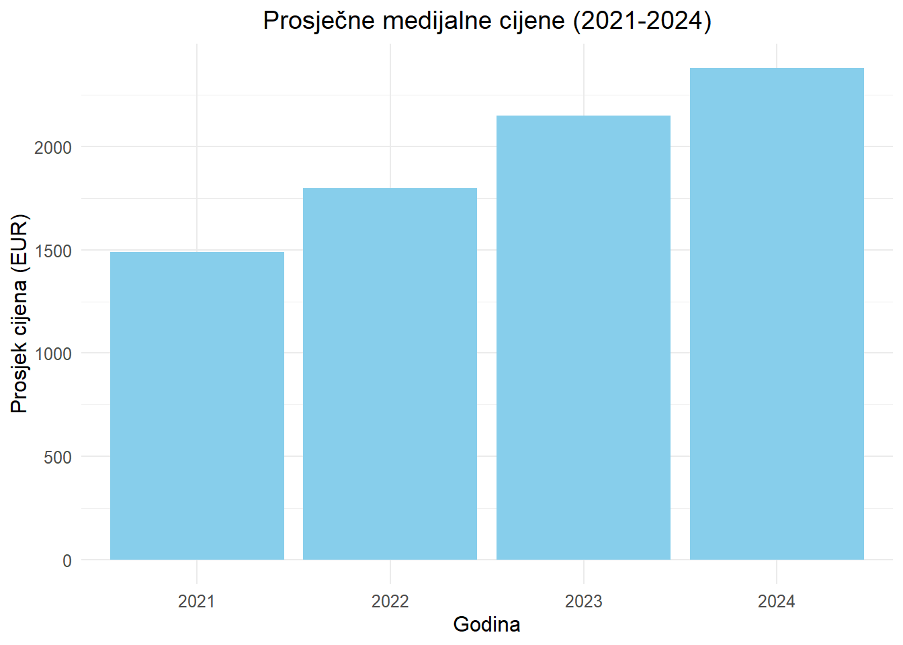
# 11. Dodavanje stupaca za apsolutne i postotne promjene cijena kroz godine
# Funkcija mutate() dodaje nove stupce u podatke s izračunatim vrijednostima
Katastar <- Katastar %>%
mutate(
# Izračun apsolutnih promjena cijena između uzastopnih godina
Promjena_21_22 = MEDIJALNA_CIJENA_EUR_22 - MEDIJALNA_CIJENA_EUR_21, # Razlika 2022. - 2021.
Promjena_22_23 = MEDIJALNA_CIJENA_EUR_23 - MEDIJALNA_CIJENA_EUR_22, # Razlika 2023. - 2022.
Promjena_23_24 = MEDIJALNA_CIJENA_EUR_24 - MEDIJALNA_CIJENA_EUR_23, # Razlika 2024. - 2023.
# Izračun postotnih promjena cijena između uzastopnih godina
Postotna_Promjena_21_22 = (Promjena_21_22 / MEDIJALNA_CIJENA_EUR_21) * 100, # % promjena 2022. - 2021.
Postotna_Promjena_22_23 = (Promjena_22_23 / MEDIJALNA_CIJENA_EUR_22) * 100, # % promjena 2023. - 2022.
Postotna_Promjena_23_24 = (Promjena_23_24 / MEDIJALNA_CIJENA_EUR_23) * 100 # % promjena 2024. - 2023.
)
# 12. Vizualizacija apsolutnih promjena cijena kroz godine
# Koristimo ggplot2 za prikaz prostorne distribucije apsolutnih promjena cijena
# Vizualizacija promjena cijena za razdoblje 2021.-2022.
ggplot(Katastar) +
geom_sf(aes(fill = Promjena_21_22)) + # Boja prema apsolutnim promjenama
scale_fill_gradient(low = "lightblue", high = "darkblue") + # Gradijent boja od svijetloplave do tamnoplave
labs(
title = "Promjena cijena (2021-2022)", # Naslov grafa
fill = "Promjena cijene (EUR)" # Oznaka za legendu
) +
theme_minimal() # Minimalistički stil grafa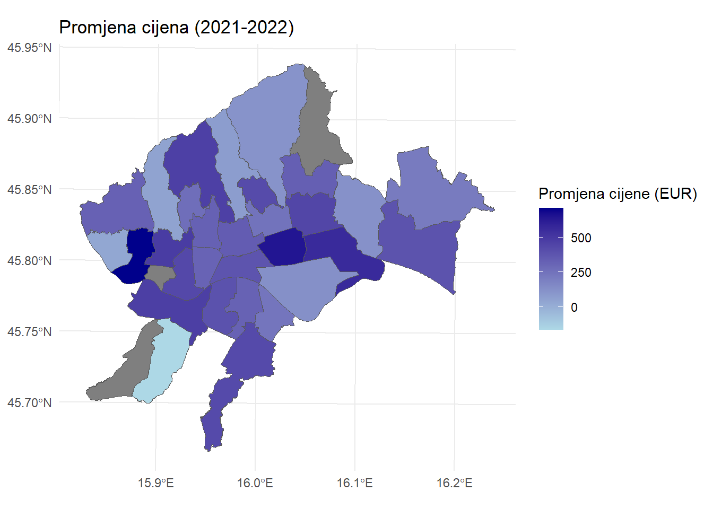
# Vizualizacija promjena cijena za razdoblje 2022.-2023.
ggplot(Katastar) +
geom_sf(aes(fill = Promjena_22_23)) + # Boja prema apsolutnim promjenama
scale_fill_gradient(low = "lightblue", high = "darkblue") +
labs(
title = "Promjena cijena (2022-2023)",
fill = "Promjena cijene (EUR)"
) +
theme_minimal()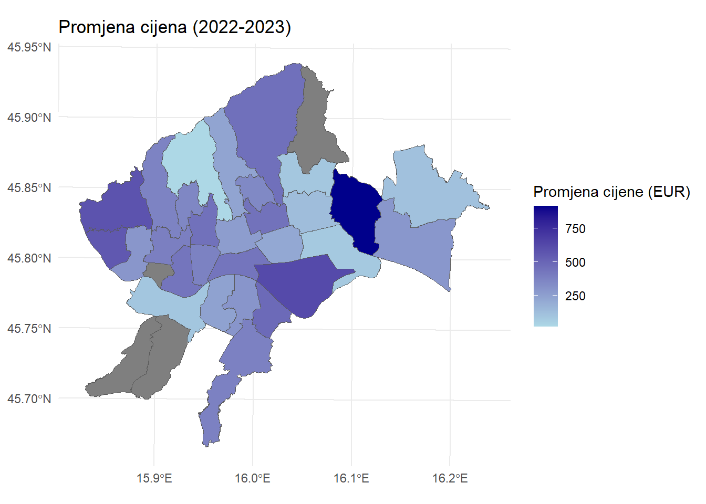
# Vizualizacija promjena cijena za razdoblje 2023.-2024.
ggplot(Katastar) +
geom_sf(aes(fill = Promjena_23_24)) + # Boja prema apsolutnim promjenama
scale_fill_gradient(low = "lightblue", high = "darkblue") +
labs(
title = "Promjena cijena (2023-2024)",
fill = "Promjena cijene (EUR)"
) +
theme_minimal()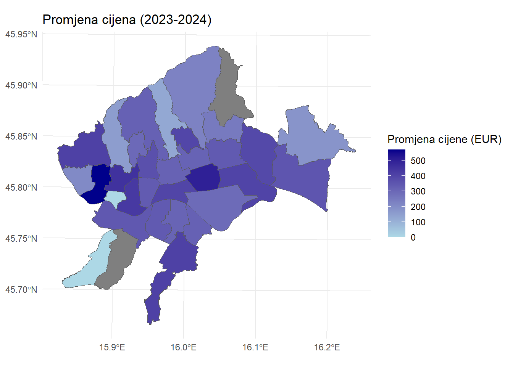
# 13. Vizualizacija postotnih promjena cijena kroz godine
# Slično prethodnom koraku, ali sada prikazujemo postotne promjene cijena
# Vizualizacija postotnih promjena za razdoblje 2021.-2022.
ggplot(Katastar) +
geom_sf(aes(fill = Postotna_Promjena_21_22)) + # Boja prema postotnim promjenama
scale_fill_gradient(low = "lightgreen", high = "darkgreen") + # Gradijent boja od svijetlozelene do tamnozelene
labs(
title = "Postotna promjena cijena (2021-2022)", # Naslov grafa
fill = "Promjena cijene (%)" # Oznaka za legendu
) +
theme_minimal()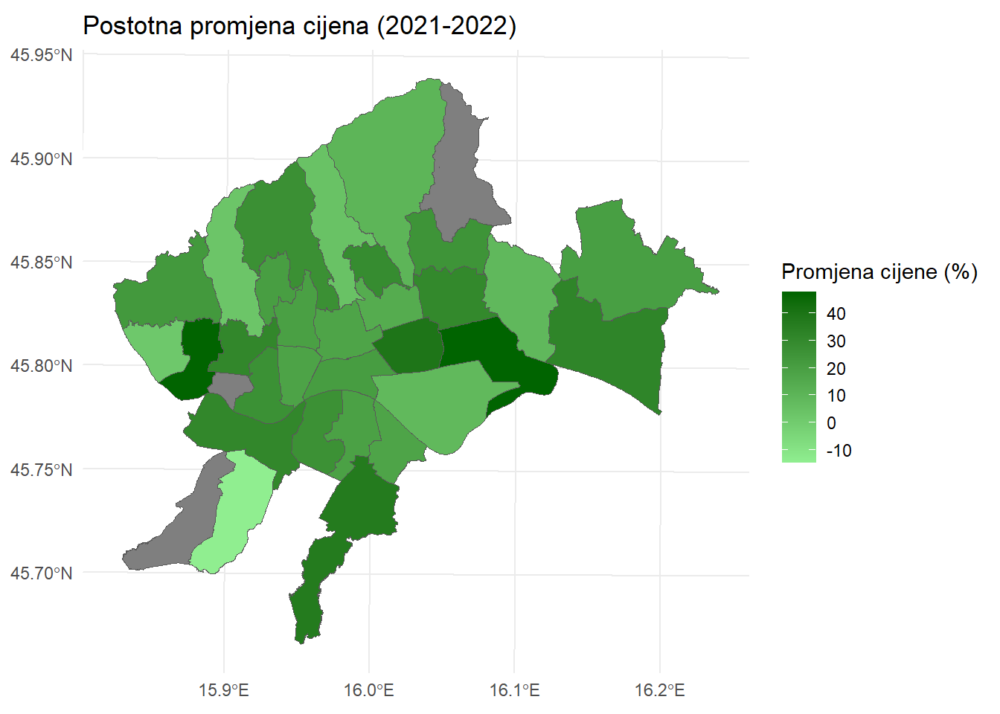
# Vizualizacija postotnih promjena za razdoblje 2022.-2023.
ggplot(Katastar) +
geom_sf(aes(fill = Postotna_Promjena_22_23)) +
scale_fill_gradient(low = "lightgreen", high = "darkgreen") +
labs(
title = "Postotna promjena cijena (2022-2023)",
fill = "Promjena cijene (%)"
) +
theme_minimal()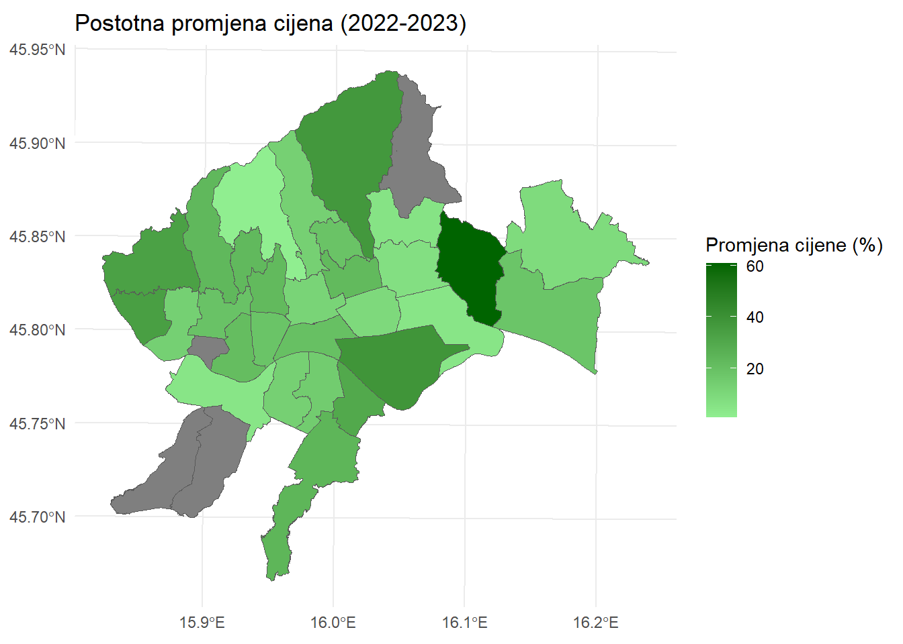
# Vizualizacija postotnih promjena za razdoblje 2023.-2024.
ggplot(Katastar) +
geom_sf(aes(fill = Postotna_Promjena_23_24)) +
scale_fill_gradient(low = "lightgreen", high = "darkgreen") +
labs(
title = "Postotna promjena cijena (2023-2024)",
fill = "Promjena cijene (%)"
) +
theme_minimal()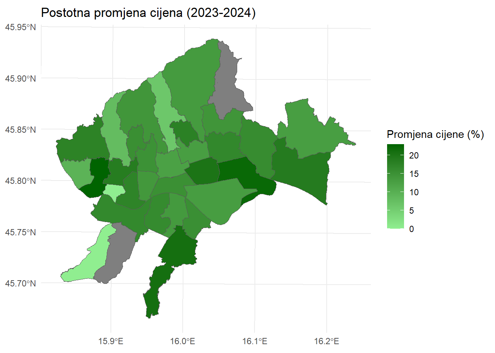
# Regresijski model je metoda koja analizira kako više različitih faktora zajedno utječu na neku ciljnu varijablu.
# Regresijski model za analizu utjecaja
# Cilj: Procijeniti koliko broj autobusa, tramvaja, škola i vrtića utječe na cijenu za 2024.
# Ulazne varijable: Broj autobusa, tramvaja, škola i vrtića.
# Rezultat: Model pokazuje koliko svaka varijabla doprinosi cijeni (ili nema utjecaja).
# Ograničenje: Ne koristi povijesne podatke i pretpostavlja linearnost (da promjena u varijabli ima stalan učinak na cijenu).
# 14. Regresijski model za predviđanje cijena
# Kreiramo regresijski model koji predviđa cijene na temelju dostupnih atributa
model <- lm(
MEDIJALNA_CIJENA_EUR_24 ~ Count_Bus + Count_Tramvaj + Count_Skola + Count_Vrtic, # Nezavisne varijable
data = Katastar # Podaci na kojima gradimo model
)
# Prikaz rezultata regresijskog modela
summary(model) # summary() daje detaljan pregled modela, uključujući koeficijente i statistike##
## Call:
## lm(formula = MEDIJALNA_CIJENA_EUR_24 ~ Count_Bus + Count_Tramvaj +
## Count_Skola + Count_Vrtic, data = Katastar)
##
## Residuals:
## Min 1Q Median 3Q Max
## -1458.31 -177.95 68.61 261.19 628.64
##
## Coefficients:
## Estimate Std. Error t value Pr(>|t|)
## (Intercept) 2027.7363 200.8145 10.098 7.76e-11 ***
## Count_Bus 1.1148 5.2760 0.211 0.834
## Count_Tramvaj 0.1771 16.2024 0.011 0.991
## Count_Skola -6.8070 65.1977 -0.104 0.918
## Count_Vrtic 34.0696 25.1498 1.355 0.186
## ---
## Signif. codes: 0 '***' 0.001 '**' 0.01 '*' 0.05 '.' 0.1 ' ' 1
##
## Residual standard error: 491.2 on 28 degrees of freedom
## Multiple R-squared: 0.2975, Adjusted R-squared: 0.1972
## F-statistic: 2.965 on 4 and 28 DF, p-value: 0.03682# 15. Uklanjanje geometrije iz sf objekta
# sf objekti sadrže geometrijske podatke, ali za statističke analize trebamo samo atributne podatke
Katastar_numeric <- Katastar %>%
st_drop_geometry() # st_drop_geometry() uklanja stupac geometrije iz sf objekta
# 16. Kreiranje korelacijske matrice za numeričke varijable
# Korelacijska matrica pokazuje međusobne odnose između numeričkih varijabli
correlation_matrix <- Katastar_numeric %>%
select(Count_Bus, Count_Tramvaj, Count_Skola, Count_Vrtic) %>% # Odabiremo relevantne stupce
cor(use = "complete.obs") # cor() izračunava korelacije, ignorirajući nedostajuće vrijednosti
# 17. Vizualizacija korelacijske matrice
# Koristimo corrplot za prikaz korelacijskih vrijednosti
corrplot(
correlation_matrix, # Korelacijska matrica
method = "number", # Prikazuje brojeve unutar ćelija matrice
type = "upper", # Prikazuje samo gornji trokut matrice (za uredniji prikaz)
tl.col = "black", # Postavlja boju oznaka varijabli na crnu
tl.srt = 45, # Rotira oznake varijabli za 45 stupnjeva radi bolje čitljivosti
addCoef.col = "black" # Dodaje numeričke vrijednosti koeficijenata korelacije unutar ćelija
)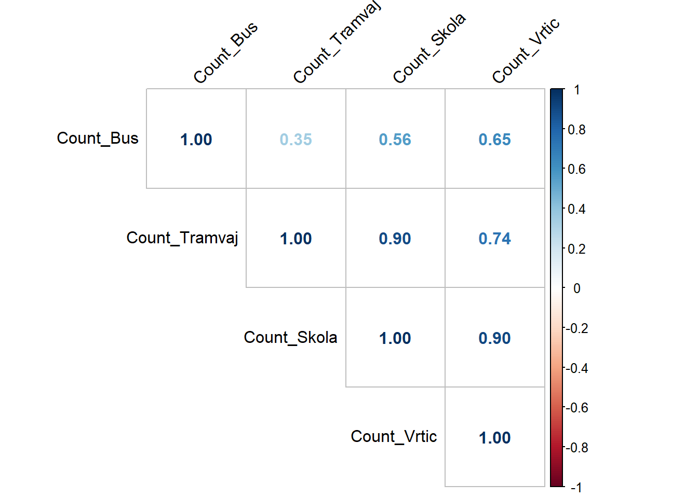
# K-means je metoda za grupiranje podataka u K grupa (klastera) na temelju sličnosti. Radi na sljedeći način:
# Početna postavka: Nasumično odabere K centara (tzv. centrioda) za početak.
# Dodjeljivanje: Svakom podatku dodijeli klaster prema najbližem centru.
# Ažuriranje: Ponovno izračuna centar svakog klastera kao prosjek svih podataka u tom klasteru.
# Ponavljanje: Ponavlja dodjeljivanje i ažuriranje dok se centri više ne mijenjaju (ili nakon određenog broja iteracija).
# Cilj K-meansa je napraviti klastere koji su što sličniji unutar klastera i što različitiji između klastera.
# 18. Priprema podataka za kmeans
# Selektiramo stupac MEDIJALNA_CIJENA_EUR_24 iz dataset-a Katastar.
# Ovo su vrijednosti koje koristimo za klasteriranje.
cijene <- Katastar$MEDIJALNA_CIJENA_EUR_24
# Provjera nedostajućih vrijednosti
# K-means algoritam ne može raditi s NA vrijednostima. Koristimo na.omit() za uklanjanje redaka s NA.
cijene <- na.omit(cijene)
# 19. Normalizacija podataka
# K-means je osjetljiv na skalu podataka jer koristi euklidsku udaljenost.
# Normaliziramo cijene kako bismo ih smjestili u raspon od 0 do 1.
cijene_norm <- (cijene - min(cijene)) / (max(cijene) - min(cijene))
# Normalizacija osigurava da veće vrijednosti ne dominiraju nad manjima tijekom grupiranja.
# 20. Odabir broja klastera (K)
# K-means zahtijeva unaprijed zadani broj klastera, K.
# Metoda "elbow" koristi ukupan trošak (unutar-klastersku sumu kvadrata) za svaki broj K.
set.seed(123) # Postavljamo seed za reproducibilnost.
wss <- sapply(1:10, function(k) {
kmeans(cijene_norm, centers = k, nstart = 20)$tot.withinss
})
# $tot.withinss: Ukupna suma kvadrata udaljenosti unutar klastera za zadani broj K.
# nstart = 20: Ponavlja inicijalizaciju centara 20 puta i odabire najbolje rješenje.
# Vizualizacija metode "elbow"
plot(1:10, wss, type = "b", pch = 19, frame = FALSE,
xlab = "Broj klastera K",
ylab = "Unutar-klasterska suma kvadrata",
main = "Odabir broja klastera metodom 'Elbow'")
abline(v = 3, lty = 2, col = "red") # Pretpostavljeni optimalni K.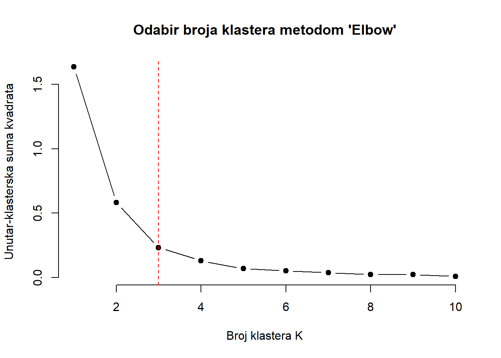
# Na "koljenu" grafa (nagli pad troška se smanjuje) odabiremo optimalan broj klastera (npr. K = 3).
# 21. Primjena K-means algoritma
# Nakon što smo odabrali K, primjenjujemo K-means klasteriranje.
kmeans_result <- kmeans(cijene_norm, centers = 3, nstart = 20)
# centers = 3: Koristimo 3 klastera (pretpostavka iz metode "elbow").
# nstart = 20: Ponavljamo inicijalizaciju kako bismo izbjegli lokalne minimume.
# Dodajemo rezultate klasteriranja u originalni dataset Katastar.
# Na taj način povezujemo rezultate klasteriranja s prostornim jedinicama.
Katastar$Cluster <- NA # Inicijaliziramo stupac za klastere.
Katastar$Cluster[!is.na(Katastar$MEDIJALNA_CIJENA_EUR_24)] <- kmeans_result$cluster
# Svaka jedinica dobiva pridruženi klaster iz K-means algoritma.
# 22. Vizualizacija klastera na prostornim podacima
# Prikazujemo rezultate klasteriranja na prostornom grafu.
ggplot(Katastar) +
geom_sf(aes(fill = factor(Cluster))) + # Koristimo klastere za bojanje.
scale_fill_manual(values = c("red", "blue", "green")) + # Dodajemo prilagođene boje.
labs(
title = "K-means klasteriranje: Medijalne cijene za 2024.",
fill = "Klaster"
) +
theme_minimal()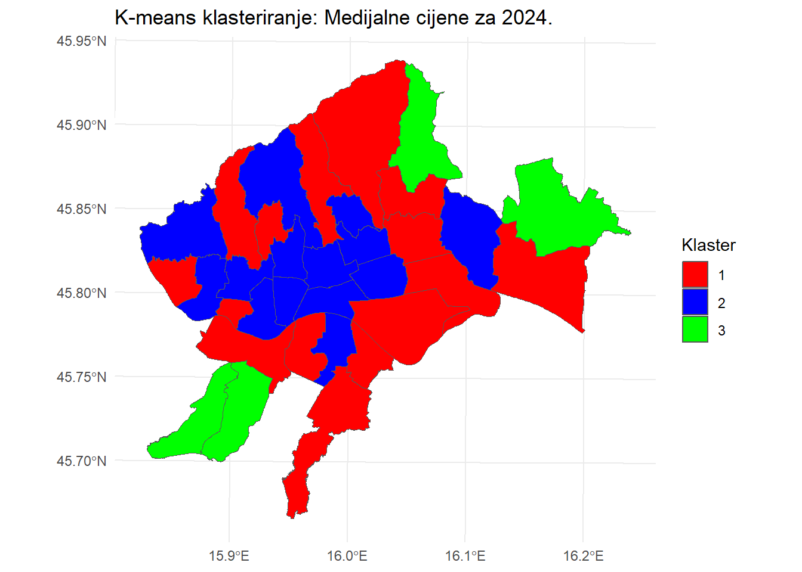
# Prostorni prikaz omogućuje uvid u geografski raspored klastera.
# 23. Interpretacija klastera
# Analiziramo prosječne medijalne cijene i broj općina u svakom klasteru.
cluster_stats <- Katastar %>%
group_by(Cluster) %>%
summarise(
Prosječna_Cijena = mean(MEDIJALNA_CIJENA_EUR_24, na.rm = TRUE),
Broj_Općina = n()
)
print(cluster_stats)## Simple feature collection with 3 features and 3 fields
## Geometry type: MULTIPOLYGON
## Dimension: XY
## Bounding box: xmin: 447310.4 ymin: 5058613 xmax: 479770.8 ymax: 5088960
## Projected CRS: HTRS96 / Croatia TM
## # A tibble: 3 × 4
## Cluster Prosječna_Cijena Broj_Općina geometry
## <int> <dbl> <int> <MULTIPOLYGON [m]>
## 1 1 2281. 15 (((456752.1 5061059, 456749.5 5061084, 4…
## 2 2 2817. 14 (((453775 5071248, 453775.5 5071249, 453…
## 3 3 1216. 4 (((453378.4 5068928, 453393 5068930, 453…# Rezultati prikazuju osnovne karakteristike svakog klastera.
# Dodatno možemo prikazati boxplot za usporedbu cijena između klastera.
ggplot(Katastar, aes(x = factor(Cluster), y = MEDIJALNA_CIJENA_EUR_24, fill = factor(Cluster))) +
geom_boxplot() +
labs(
title = "Distribucija medijalnih cijena po klasterima",
x = "Klaster",
y = "Medijalna cijena (EUR)"
) +
theme_minimal()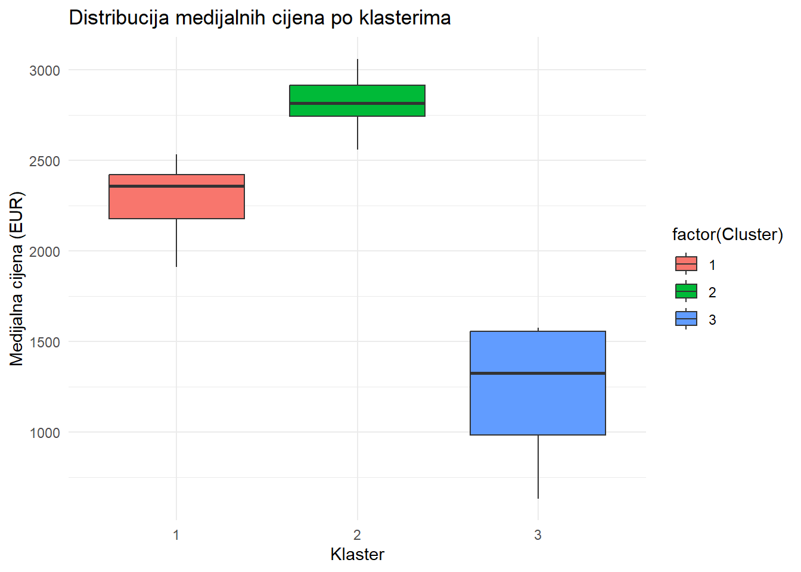
# Boxplot daje pregled raspona cijena unutar svakog klastera, uključujući medijan i ekstreme.
# Prostorna autokorelacija pokazuje postoji li prostorna povezanost između vrijednosti neke varijable (npr. cijena nekretnina)
# u susjednim prostornim jedinicama. Koristimo Moranov indeks za kvantifikaciju prostorne autokorelacije, a on može biti:
# Globalni Moranov indeks: Pokazuje ukupnu prostornu autokorelaciju u cijelom području.
# Lokalni Moranov indeks (LISA): Identificira lokalne klastere i prostorne anomalije.
# Globalni Moranov indeks je jedna vrijednost koja mjeri ukupnu prostornu povezanost. Vrijednosti su:
# Blizu 1: Jaka pozitivna prostorna autokorelacija (slične vrijednosti grupirane zajedno).
# Blizu -1: Jaka negativna prostorna autokorelacija (različite vrijednosti susjedne).
# Oko 0: Nema prostorne autokorelacije (nasumičan raspored).
# 24. Kreiranje susjedne matrice (Queen kriterij)
# Queen kriterij definira susjedne jedinice na način da prostornoj jedinici smatra susjedom svaku jedinicu
# koja dijeli bilo koju granicu ili kut (kao kod kraljice u šahu).
# To znači da jedinice koje dijele i dijagonalne točke smatra susjedima.
# Koristimo prostorne geometrije iz objekta Katastar
neighbours <- poly2nb(Katastar, queen = TRUE) # poly2nb koristi geometriju za određivanje susjeda (Queen kriterij)
weights <- nb2listw(neighbours, style = "W") # Konverzija u težinsku matricu s normaliziranim težinama
# 25. Izračun Globalnog Moranovog indeksa
# Analiziramo MEDIJALNA_CIJENA_EUR_24
moran_global <- moran.test(Katastar$MEDIJALNA_CIJENA_EUR_24, weights)
# 26. Prikaz rezultata
print(moran_global)##
## Moran I test under randomisation
##
## data: Katastar$MEDIJALNA_CIJENA_EUR_24
## weights: weights
##
## Moran I statistic standard deviate = 3.8158, p-value = 6.788e-05
## alternative hypothesis: greater
## sample estimates:
## Moran I statistic Expectation Variance
## 0.38314787 -0.03125000 0.01179427# Lokalni Moranov indeks
# Lokalni Moranov indeks pokazuje prostorne klastere:
# High-High klasteri (HH): Područja gdje su visoke vrijednosti grupirane.
# Low-Low klasteri (LL): Područja gdje su niske vrijednosti grupirane.
# High-Low ili Low-High klasteri (HL/LH): Prostorne anomalije (visoka vrijednost okružena niskima ili obrnuto).
# 27. Izračun lokalnog Moranovog indeksa (Local Moran's I)
local_moran <- localmoran(Katastar$MEDIJALNA_CIJENA_EUR_24, weights) # 'weights' je matrica susjedstva izračunata ranije
# 27. Izračun lokalnog Moranovog indeksa (Local Moran's I)
# Funkcija `localmoran` iz paketa `spdep` koristi prostorne podatke (npr. cijene nekretnina)
# i prostornu težinsku matricu (`weights`) kako bi izračunala lokalni Moranov indeks.
# Rezultat sadrži informacije o prostornoj autokorelaciji za svaku jedinicu.
local_moran <- localmoran(Katastar$MEDIJALNA_CIJENA_EUR_24, weights)
# 28. Kombinacija rezultata u podatkovni okvir
# Rezultati lokalnog Moranovog indeksa se transformiraju u novi podatkovni okvir.
# Svaka jedinica dobiva pripadajuće vrijednosti:
# - `Local_Morans_I`: Vrijednost lokalnog Moranovog indeksa
# - `Expected`: Očekivana vrijednost indeksa
# - `Std_Observed`: Standardizirane opažene vrijednosti
local_moran_df <- data.frame(
Kljuc = Katastar$KEY, # Jedinstveni identifikator prostorne jedinice
Local_Morans_I = local_moran[, 1], # Vrijednosti lokalnog Moranovog indeksa
Expected = local_moran[, 2], # Očekivane vrijednosti
Std_Observed = local_moran[, 3], # Standardizirane opažene vrijednosti
LISA_P = local_moran[, 5], # P-vrijednosti za lokalni Moranov indeks
LISA_Sig = ifelse(local_moran[, 5] < 0.05, "Significant", "Not Significant") # Oznaka značajnosti
)
# 29. Spremanje dodatnih atributa, uključujući kvadrante
# Kreiramo dodatni podatkovni okvir s kvadrantima koji opisuju prostorne klastere:
# - Kvadranti se odnose na kategorije (npr. High-High, Low-Low, High-Low, Low-High),
# koje identificiraju vrstu prostornog odnosa između vrijednosti.
quadr_df <- data.frame(
Kljuc = Katastar$KEY, # Jedinstveni identifikator prostorne jedinice
Quadr = attr(local_moran, "quadr"), # Kvadranti (ako ih algoritam generira automatski)
MED_CIJENA = Katastar$MEDIJALNA_CIJENA_EUR_24 # Varijabla koju analiziramo (cijene nekretnina)
)
# 30. Ispis osnovnih informacija o objektu `local_moran`
# Ovdje ispisujemo dodatne informacije pohranjene kao atribute objekta `local_moran`:
# - `call`: Prikazuje kako je funkcija `localmoran` pozvana
# - `class`: Pokazuje tip objekta (klasa), što može pomoći u daljnjoj analizi
print(attr(local_moran, "call")) # Prikaz funkcijskog poziva## localmoran(x = Katastar$MEDIJALNA_CIJENA_EUR_24, listw = weights)## [1] "localmoran" "matrix" "array"# 31. Spajanje kvadranata s prostornim podacima
# Prostorni podaci (`Katastar`) se proširuju informacijama o kvadrantima.
# Spajanje se vrši pomoću jedinstvenog identifikatora (`KEY`), čime svaka jedinica
# dobiva svoj odgovarajući kvadrant.
katastar_data <- merge(Katastar, quadr_df, by.x = "KEY", by.y = "Kljuc", all.x = TRUE)
# 32. Spajanje lokalnog Moranovog indeksa s podacima
# Prostornim podacima dodajemo rezultate lokalnog Moranovog indeksa.
# Svaka jedinica sada sadrži:
# - Prostorne informacije
# - Vrijednosti lokalnog Moranovog indeksa
Katastar_Analitika <- merge(katastar_data, local_moran_df, by.x = "KEY", by.y = "Kljuc", all.x = TRUE)
# 33. Ispis konačnih podataka
# Prikazujemo proširene podatke koji uključuju informacije o kvadrantima i lokalnom
# Moranovom indeksu za daljnju analizu ili vizualizaciju.
print(Katastar_Analitika)## Simple feature collection with 33 features and 40 fields
## Geometry type: POLYGON
## Dimension: XY
## Bounding box: xmin: 447310.4 ymin: 5058613 xmax: 479770.8 ymax: 5088960
## Projected CRS: HTRS96 / Croatia TM
## First 10 features:
## KEY OBJECTID KO_NAZIV SHAPE_Leng SHAPE_Area KO
## 1 1 1 ČRNOMEREC 13830.45 6324009 Črnomerec
## 2 2 2 ČUČERJE 25139.21 9747124 Čučerje
## 3 3 4 DUBRAVA 16318.71 10491758 Dubrava
## 4 4 6 KLARA 14962.60 8639573 Klara
## 5 5 7 GORNJE VRAPČE 24968.11 14288834 Gornje Vrapče
## 6 6 8 GORNJI STENJEVEC 26229.04 17188795 Gornji Stenjevec
## 7 7 10 MIKULIĆI 15135.00 5214196 Mikulići
## 8 8 12 TREŠNJEVKA 11069.67 3788989 Trešnjevka
## 9 9 13 TRNJE 15133.50 7375739 Trnje
## 10 10 18 MAKSIMIR 15105.95 6828886 Maksimir
## BROJ_TRANSAKCIJA_21 MEDIJALNA_CIJENA_EUR_21 MEDIJALNA_VELICINA_21
## 1 652 1677.253 66
## 2 NA NA NA
## 3 472 1459.533 57
## 4 568 1477.253 62
## 5 33 1550.840 68
## 6 76 1426.987 78
## 7 100 1303.867 98
## 8 1122 1737.373 59
## 9 711 1802.547 60
## 10 176 1746.080 70
## MEDIJALNA_STAROST_21 BROJ_TRANSAKCIJA_22 MEDIJALNA_CIJENA_EUR_22
## 1 16 485 2002.3
## 2 NA 12 1575.1
## 3 41 598 1901.5
## 4 12 467 1865.7
## 5 14 34 1598.0
## 6 12 38 1748.3
## 7 14 72 1570.0
## 8 33 984 2052.0
## 9 38 517 2181.5
## 10 51 189 1993.5
## MEDIJALNA_VELICINA_22 MEDIJALNA_STAROST_22 BROJ_TRANSAKCIJA_23
## 1 66.8 62 381
## 2 63.3 0 NA
## 3 56.7 16 548
## 4 57.0 14 677
## 5 62.6 16 27
## 6 82.7 13 29
## 7 95.1 14 60
## 8 56.2 48 427
## 9 57.1 47 472
## 10 72.9 52 175
## MEDIJALNA_CIJENA_EUR_23 MEDIJALNA_VELICINA_23 MEDIJALNA_STAROST_23 Count_Bus
## 1 2452.60 65.40 61 70
## 2 NA NA NA 37
## 3 2028.40 57.90 15 122
## 4 2105.90 65.60 1 45
## 5 1967.90 66.60 16 28
## 6 2329.80 90.30 14 42
## 7 1925.10 75.20 18 36
## 8 2426.95 54.85 51 37
## 9 2612.90 57.60 44 47
## 10 2439.80 79.90 43 54
## Count_Ljekarna Count_Skola Count_Tramvaj Count_Vrtic MEDIJALNA_CIJENA_EUR_24
## 1 15 9 15 15 2819.398
## 2 1 2 0 2 1575.100
## 3 17 12 20 24 2365.344
## 4 8 4 7 8 2444.931
## 5 1 1 0 3 2122.640
## 6 0 0 0 2 2737.842
## 7 1 1 0 2 2220.889
## 8 19 10 34 15 2761.684
## 9 18 11 29 16 3009.336
## 10 9 7 9 7 2753.513
## Promjena_21_22 Promjena_22_23 Promjena_23_24 Postotna_Promjena_21_22
## 1 325.0467 450.30 366.7978 19.379700
## 2 NA NA NA NA
## 3 441.9667 126.90 336.9444 30.281368
## 4 388.4467 240.20 339.0311 26.295196
## 5 47.1600 369.90 154.7400 3.040933
## 6 321.3133 581.50 408.0422 22.516912
## 7 266.1333 355.10 295.7889 20.411085
## 8 314.6267 374.95 334.7344 18.109330
## 9 378.9533 431.40 396.4356 21.023219
## 10 247.4200 446.30 313.7133 14.170027
## Postotna_Promjena_22_23 Postotna_Promjena_23_24 Cluster Quadr.mean
## 1 22.489137 14.955467 2 High-High
## 2 NA NA 3 Low-Low
## 3 6.673679 16.611341 1 Low-Low
## 4 12.874524 16.099108 1 High-High
## 5 23.147685 7.863204 1 Low-High
## 6 33.260882 17.514045 2 High-High
## 7 22.617834 15.364858 1 Low-High
## 8 18.272417 13.792391 2 High-High
## 9 19.775384 15.172244 2 High-High
## 10 22.387760 12.858158 2 High-High
## Quadr.median Quadr.pysal MED_CIJENA Local_Morans_I Expected
## 1 High-High High-High 2819.398 0.431584507 -0.0207773450
## 2 Low-Low Low-Low 1575.100 1.182634846 -0.0693345572
## 3 Low-Low Low-High 2365.344 -0.003245774 -0.0000206200
## 4 High-High High-High 2444.931 0.073017735 -0.0004631338
## 5 Low-High Low-High 2122.640 -0.197473774 -0.0070588530
## 6 High-High High-High 2737.842 0.300020166 -0.0137915161
## 7 Low-High Low-High 2220.889 -0.119587965 -0.0026878393
## 8 High-High High-High 2761.684 0.517282294 -0.0156862262
## 9 High-High High-High 3009.336 0.614020207 -0.0425764256
## 10 High-Low High-High 2753.513 0.137798661 -0.0150231479
## Std_Observed LISA_P LISA_Sig geometry
## 1 1.169547e-01 0.18591909 Not Significant POLYGON ((455881.1 5076734,...
## 2 1.030355e+00 0.21743043 Not Significant POLYGON ((464926.9 5088757,...
## 3 9.511612e-05 0.74087734 Not Significant POLYGON ((463370 5078100, 4...
## 4 3.449495e-03 0.21089330 Not Significant POLYGON ((456859.7 5068900,...
## 5 5.222855e-02 0.40473438 Not Significant POLYGON ((452116.8 5078813,...
## 6 1.013517e-01 0.32427051 Not Significant POLYGON ((447310.4 5077796,...
## 7 1.997490e-02 0.40816462 Not Significant POLYGON ((454970 5078115, 4...
## 8 5.870110e-02 0.02782280 Significant POLYGON ((456548.8 5074605,...
## 9 1.549771e-01 0.09533949 Not Significant POLYGON ((457466.4 5071842,...
## 10 6.825922e-02 0.55859408 Not Significant POLYGON ((460239.4 5078152,...# Prostorni zaostatak je prosjek ili ponderirana suma vrijednosti od prostorno susjednih jedinica za određenu varijablu.
# Drugim riječima, pokazuje koliko je vrijednost u nekoj jedinici povezana s vrijednostima njenih susjeda, koristeći prostornu težinsku matricu.
# Prostorni zaostatak omogućuje razumijevanje kako prostorna okolina (npr. cijene u susjednim područjima) utječe na vrijednosti u pojedinoj jedinici.
# lag.listw() funkcija:
# - `weights`: Prostorna težinska matrica (definira odnose između susjeda).
# - `Katastar_Analitika$MEDIJALNA_CIJENA_EUR_24`: Varijabla za koju računamo prostorni zaostatak.
# Što je prostorni zaostatak?
# Prostorni zaostatak (eng. Spatial Lag) pokazuje kako se vrijednost varijable u nekoj prostornoj jedinici odnosi na
# prosjek (ili ponderiranu sumu) vrijednosti iste varijable u susjednim jedinicama.
# Jednostavno objašnjenje:
# Umjesto da analiziramo samo cijene unutar svake katastarske jedinice, prostorni zaostatak uključuje i utjecaj cijena u okolnim jedinicama.
# Primjer:
# - Imamo jedinicu s cijenom **1000 EUR/m²**.
# - Njeni susjedi imaju sljedeće cijene:
# * Prva susjedna jedinica: **1100 EUR/m²**
# * Druga susjedna jedinica: **1200 EUR/m²**
# * Treća susjedna jedinica: **1300 EUR/m²**
# - Prostorni zaostatak izračunavamo kao prosjek:
# - Što to znači?
# * Vrijednost prostornog zaostatka za tu jedinicu nije jednaka njenoj vlastitoj cijeni (**1000 EUR/m²**),
# već prosjeku susjednih jedinica (**1200 EUR/m²**).
# Kako se prostorni zaostatak računa?
# - Prostorni zaostatak se računa koristeći prostornu težinsku matricu, koja definira odnose između susjednih jedinica.
# - Težinska matrica kaže koliko svaka susjedna jedinica doprinosi računanju zaostatka.
# - Ako koristimo **ponderiranu matricu** (gdje susjedi imaju različitu "težinu"), zaostatak bi bio izračunat kao **ponderirani prosjek**.
# Korištena funkcija:
# spatial_lag <- lag.listw(weights, Katastar_Analitika$MEDIJALNA_CIJENA_EUR_24)
# Ovdje:
# - `weights` je prostorna težinska matrica.
# - `Katastar_Analitika$MEDIJALNA_CIJENA_EUR_24` je varijabla čije prostorne zaostatke želimo izračunati (medijalne cijene nekretnina).
# Prostorni zaostatak omogućuje dodavanje nove dimenzije analizi:
# - Vrijednost prostornog zaostatka za svaku jedinicu uzima u obzir samo susjedne jedinice, a ne samu jedinicu.
# Kreiranje prostornog zaostatka
# Izračunavamo prostorni zaostatak za svaku jedinicu koristeći prostornu težinsku matricu i varijablu cijena.
spatial_lag <- lag.listw(weights, Katastar_Analitika$MEDIJALNA_CIJENA_EUR_24)
# Dodavanje prostornog zaostatka u dataset
# Ovo dodaje novu varijablu u dataset `Katastar_Analitika` koja sadrži izračunate prostorne zaostatke.
# Sada svaka jedinica ima dvije ključne informacije:
# 1. Vlastitu cijenu (`MEDIJALNA_CIJENA_EUR_24`).
# 2. Prosječnu cijenu u susjednim jedinicama (`Spatial_Lag`).
Katastar_Analitika$Spatial_Lag <- spatial_lag
# Prostorni zaostatak je ključan za prostorne modele jer pokazuje obrasce prostorne povezanosti
# koji se često ne mogu vidjeti koristeći samo standardne metode analize.
# Izračun razlike između medijalne cijene nekretnina i prostornog zaostatka
# - `Razlika_Cijena_SpatialLag` mjeri koliko cijena u pojedinoj jedinici odstupa od prosjeka cijena u susjednim jedinicama.
# - Interpretacija:
# - Pozitivna razlika: Cijena nekretnine u jedinici je veća od prosjeka susjeda.
# - Negativna razlika: Cijena nekretnine u jedinici je manja od prosjeka susjeda.
# - Vrijednost blizu nule: Cijena nekretnine u jedinici je slična prosjeku susjeda.
Katastar_Analitika$Razlika_Cijena_SpatialLag <- Katastar_Analitika$MEDIJALNA_CIJENA_EUR_24 - Katastar_Analitika$Spatial_Lag
# Izračun omjera između medijalne cijene nekretnina i prostornog zaostatka
# - `Omjer_Cijena_SpatialLag` mjeri relativni odnos cijene u jedinici u usporedbi s prosjekom cijena u susjednim jedinicama.
# - Interpretacija:
# - Omjer > 1: Cijena nekretnine u jedinici je veća od prosjeka susjeda.
# - Omjer < 1: Cijena nekretnine u jedinici je manja od prosjeka susjeda.
# - Omjer = 1: Cijena nekretnine u jedinici je jednaka prosjeku susjeda.
# - Omjer daje bolji uvid u relativne razlike, posebno kada su cijene različitih jedinica na različitim razinama.
Katastar_Analitika$Omjer_Cijena_SpatialLag <- Katastar_Analitika$MEDIJALNA_CIJENA_EUR_24 / Katastar_Analitika$Spatial_Lag
# Vizualizacija prostornog zaostatka
ggplot(Katastar_Analitika) +
geom_sf(aes(fill = Spatial_Lag)) +
scale_fill_viridis_c(option = "C") + # Gradijent boja za vizualizaciju
labs(
title = "Prostorni zaostatak (Spatial Lag)",
fill = "Spatial Lag"
) +
theme_minimal()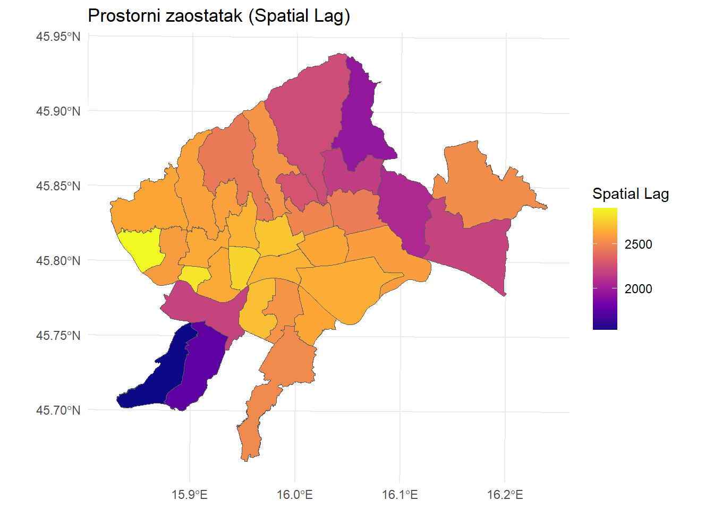
# Vizualizacija značajnosti lokalnog Moranovog indeksa
ggplot(Katastar_Analitika) +
geom_sf(aes(fill = LISA_Sig)) + # Boja prema značajnosti (significant / not significant)
scale_fill_manual(values = c("Not Significant" = "grey", "Significant" = "orange")) +
labs(
title = "Značajnost lokalnog Moranovog indeksa (LISA)",
fill = "Signifikantnost"
) +
theme_minimal()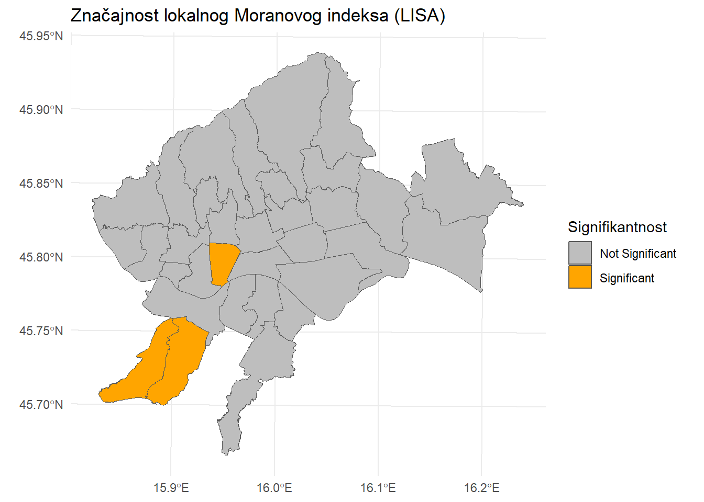
# 34. Vizualizacija prostornog klasteriranja
# Koristimo `ggplot2` za vizualizaciju prostornog klasteriranja temeljeno na kvadrantima.
# - `geom_sf`: Prikazuje prostorne objekte
# - `aes(fill = factor(Quadr.mean))`: Boje prostorne jedinice prema njihovim kvadrantima
# - `scale_fill_manual`: Definiramo boje za različite kategorije kvadranta
# - `theme_minimal`: Pojednostavljuje izgled grafike
ggplot(Katastar_Analitika) +
geom_sf(aes(fill = factor(Quadr.mean))) + # Bojanje prema kvadrantima
scale_fill_manual(values = c("red", "blue", "green", "yellow")) + # Prilagođene boje
labs(
title = "Lokalni Moranov indeks (LISA)", # Naslov vizualizacije
fill = "Kvadrant" # Legenda za boje kvadranata
) +
theme_minimal() # Minimalistički stil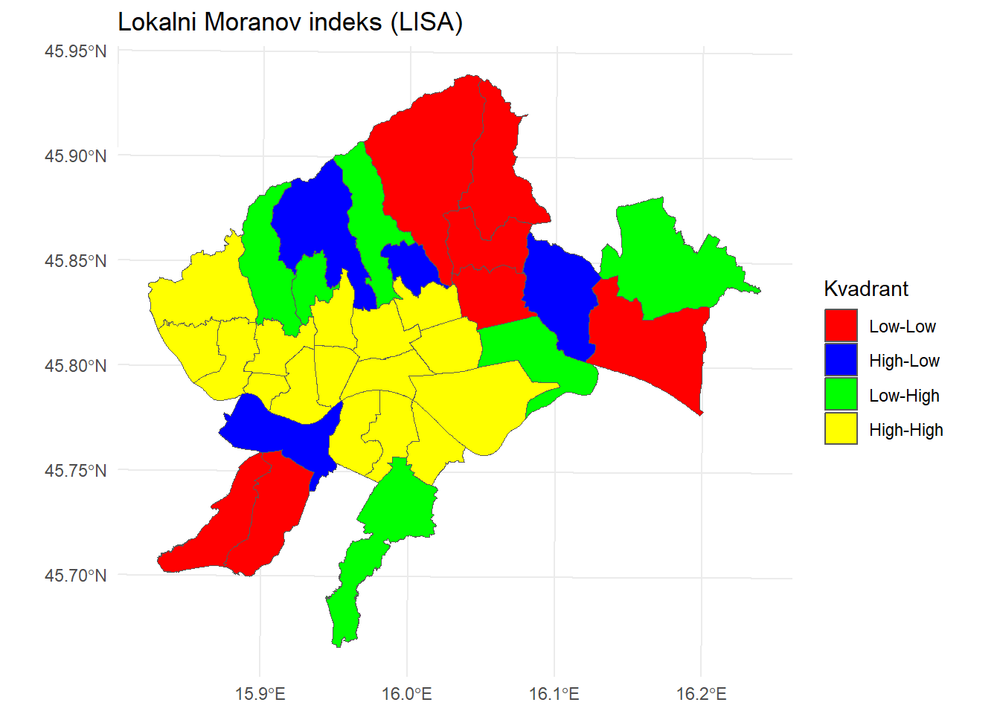
# Vizualizacija prostornog klasteriranja s oznakama za MED_CIJENA
ggplot(Katastar_Analitika) +
geom_sf(aes(fill = factor(Quadr.mean))) + # Bojanje prema kvadrantima
scale_fill_manual(values = c("red", "blue", "green", "yellow")) + # Prilagođene boje
geom_sf_text(aes(label = round(MED_CIJENA, 1)), size = 3, color = "black") + # Dodavanje oznaka (zaokruženo na 1 decimalu)
labs(
title = "Lokalni Moranov indeks (LISA) s cijenama",
fill = "Kvadrant"
) +
theme_minimal() # Minimalistički stil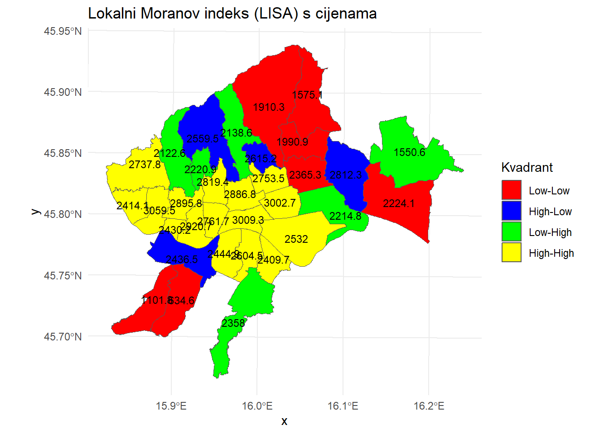
# Gearyjev C indeks je mjera prostorne autokorelacije.
# Gearyjev C indeks se izračunava na temelju razlika između susjednih vrijednosti, ali rezultat se interpretira kao mjera sličnosti.
# - Vrijednosti Gearyjevog C indeksa:
# - C = 1: Nema prostorne autokorelacije (nasumičan raspored).
# - C < 1: Pozitivna prostorna autokorelacija (slične vrijednosti grupirane zajedno).
# - C > 1: Negativna prostorna autokorelacija (različite vrijednosti susjedne).
# Funkcija `geary.test()` koristi težinsku matricu i ciljnu varijablu za izračun Gearyjevog C indeksa.
# Izračun Gearyjevog C indeksa za varijablu MEDIJALNA_CIJENA_EUR_24
geary_result <- geary.test(Katastar_Analitika$MEDIJALNA_CIJENA_EUR_24, weights)
# Prikaz rezultata
print(geary_result)##
## Geary C test under randomisation
##
## data: Katastar_Analitika$MEDIJALNA_CIJENA_EUR_24
## weights: weights
##
## Geary C statistic standard deviate = 3.8483, p-value = 5.947e-05
## alternative hypothesis: Expectation greater than statistic
## sample estimates:
## Geary C statistic Expectation Variance
## 0.5133108 1.0000000 0.0159943# Interpretacija:
# - geary_result$estimate[1]: Vrijednost Gearyjevog C indeksa.
# - geary_result$p.value: P-vrijednost testa (značajnost rezultata).
# - Ako je p-vrijednost < 0.05, autokorelacija je statistički značajna.
# Gearyjev C indeks se često koristi zajedno s Moranovim indeksom za sveobuhvatnu analizu prostorne autokorelacije.
# Izračun Getis-Ord Gi* statistike
# - `localG()` izračunava Gi* statistiku za varijablu u prostornom objektu koristeći težinsku matricu.
# - Varijabla: MEDIJALNA_CIJENA_EUR_24
gi_star <- localG(Katastar_Analitika$MEDIJALNA_CIJENA_EUR_24, weights)
# Dodavanje rezultata u dataset
Katastar_Analitika$Getis_Ord_Gi <- as.numeric(gi_star)
# Vizualizacija Getis-Ord Gi* rezultata
# Prikazujemo klastere visokih i niskih vrijednosti na karti
ggplot(Katastar_Analitika) +
geom_sf(aes(fill = Getis_Ord_Gi)) + # Koristimo rezultate Gi* za bojanje
scale_fill_gradient2(
low = "blue", mid = "white", high = "red", # Plava za niske, crvena za visoke klastere
midpoint = 0, # Neutralna točka
name = "Gi*" # Oznaka legende
) +
labs(
title = "Getis-Ord Gi* statistika: Klasteri cijena (2024)",
fill = "Gi* vrijednost"
) +
theme_minimal()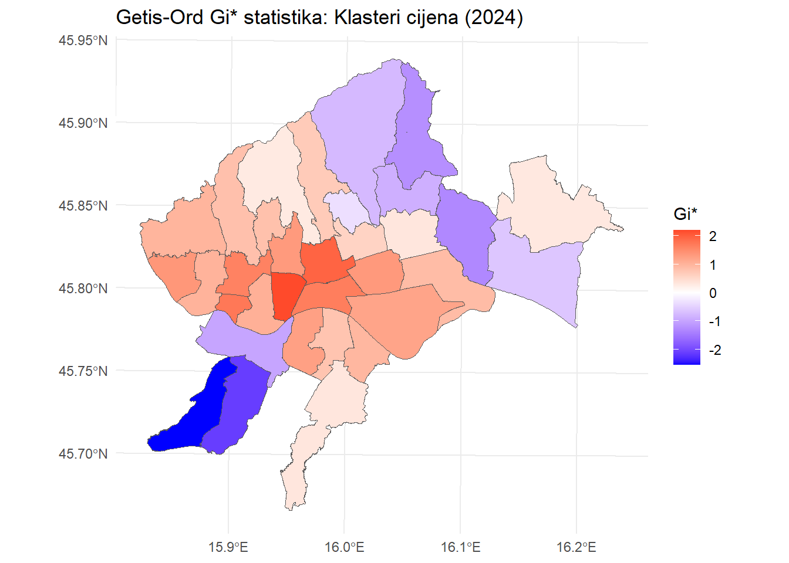
## Min. 1st Qu. Median Mean 3rd Qu. Max.
## -2.5509 -0.3420 0.8271 0.4447 1.2511 2.1998# Izračun p-vrijednosti za Gi* rezultate
# - Pretpostavka: Gi* statistika prati standardnu normalnu distribuciju.
# - P-vrijednost izračunavamo kao dvostrani test na temelju apsolutnih vrijednosti Gi* rezultata.
# - Nova varijabla `Gi_p_value` sadrži p-vrijednosti za svaku prostornu jedinicu.
Katastar_Analitika$Gi_p_value <- 2 * pnorm(-abs(gi_star)) # Dvostrani test
# Dodavanje značajnosti (kategorije prema p-vrijednostima)
# - Rezultate značajnosti kategoriziramo prema pragovima p-vrijednosti:
# - Vrlo značajno (p < 0.01): Snažni klasteri (hotspots/coldspots).
# - Značajno (p < 0.05): Umjereni klasteri.
# - Nije značajno: Neutralna područja bez klastera.
Katastar_Analitika$Gi_significance <- cut(
Katastar_Analitika$Gi_p_value,
breaks = c(-Inf, 0.01, 0.05, 1), # Pragovi za kategorizaciju
labels = c("Vrlo značajno (p < 0.01)", "Značajno (p < 0.05)", "Nije značajno") # Kategorije
)
# Vizualizacija značajnosti Gi* rezultata
# - ggplot2 koristi kategorije značajnosti za prikaz klastera na prostornoj karti.
# - Boje za kategorije:
# - Crvena: Vrlo značajni klasteri (p < 0.01).
# - Narančasta: Značajni klasteri (p < 0.05).
# - Siva: Područja bez značajnih klastera.
ggplot(Katastar_Analitika) +
geom_sf(aes(fill = Gi_significance)) + # Prikaz prema značajnosti
scale_fill_manual(
values = c("red", "orange", "grey"), # Definicija boja za kategorije
name = "Značajnost" # Oznaka za legendu
) +
labs(
title = "Značajnost Getis-Ord Gi* statistike", # Naslov karte
fill = "Kategorija značajnosti" # Oznaka legende
) +
theme_minimal() # Minimalistički stil vizualizacije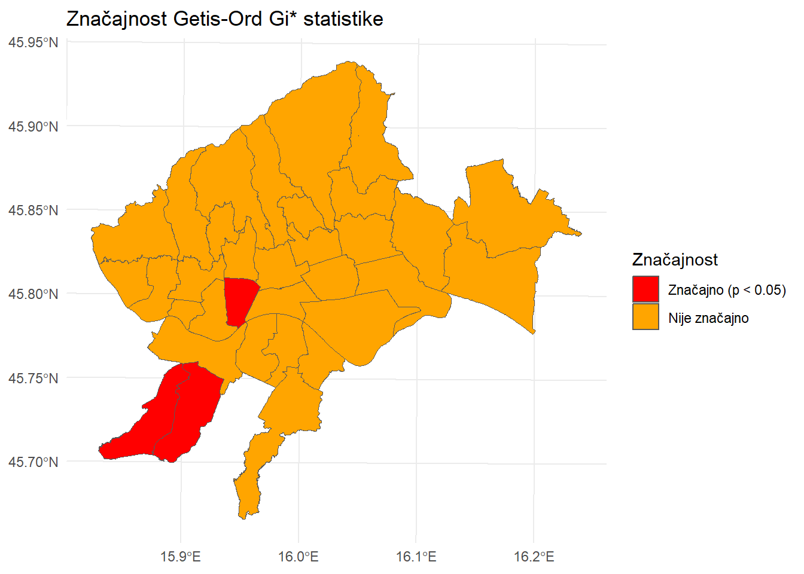